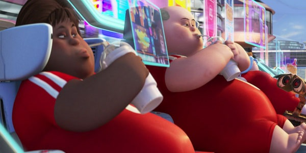
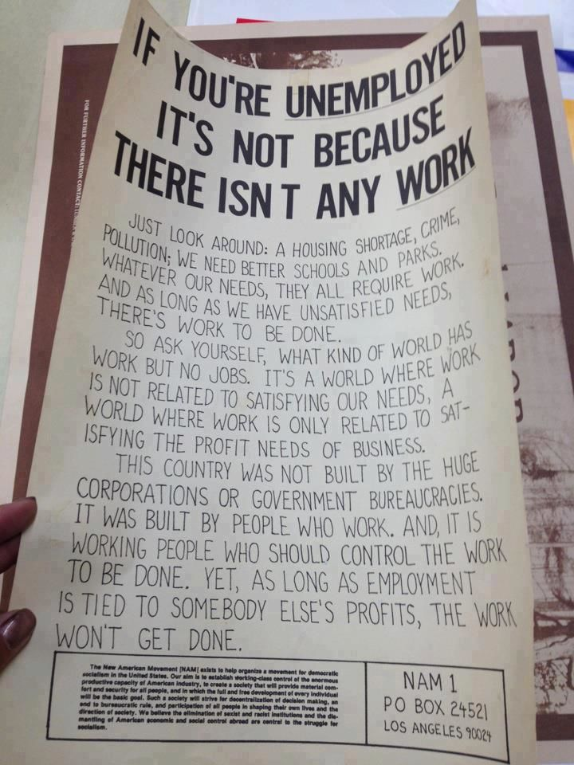

This struck me at the age of 28 while attending my lifelong friend’s public doctoral defense. What follows is a mishmash of events that got me here.
At fourteen years old people decided that I should switch from an academic education to a technical one. For some this is great, but it’s generally considered as a step down. For me it meant the latter. I remember talking to my new math teacher shortly after transferring. Math had become too easy so I wondered if it was possible to go back. Alas. Back then I thought adults always knew best, so I did what was expected. My education went from something difficult but interesting to something easy and boring, a chore. Moreover, some friends became bullies. This made me paranoid and take refuge in games. I would be remiss to discount my entire gaming history as a waste of time. After all, online I could be myself while having fun with friends (1). My curiosity and imagination still thrived because my virtual life felt like an adventure. But that also meant I changed from a studious (2) nerd into someone academically lazy. The real world felt foreign for a long time, and throughout the years harmless gaming grew into gaming alone.
The cake was a lie. I passed the first year nicely and science-oriented courses brightened my days, but I thoroughly hated the work. The environment was a far cry from my naive expectations. The second year I dropped out and did some odd jobs. Disgusted with the rut I re-enrolled only to grow depressed late in the third year. Each morning I wished for the train to derail. As my malcontent with the prospects of working life increased, so did my consumption of beer. Something that initially had the positive effect of eliminating my paranoia became an escape from reality. A mental state where I wasn’t becoming a nurse, where I wouldn’t have to do work I hated. I loved my drunk life more than my sober one. I broke down during a teacher-student evaluation and dropped out permanently.
Quitting nursing was a huge relief, but it also meant choosing between work or study. I sure as hell wasn’t going to work a bullshit job, so I enrolled in Digital Arts & Entertainment (DAE). Finally, a place that felt like home. It was a deadline hell but we were all in it together, day and night. People from all backgrounds, genuine and kind. It was one of the best years of my life, filled with drawing, programming (3), 3D art, philosophy, and so on. I even met my first girlfriend, an Erasmus student.
Sadly, in the second year, things went south. My girlfriend had to return home; I missed my friends, so partying and leisure took over; my laptop had multiple consecutive hard disk failures; and the most influential reason, I chose programming as a major. It felt way over my head so I switched to arts. Dedication grew thin, and I felt more and more disconnected.
[Back then, if I didn’t understand something quickly I assumed I was incapable. Maybe I am too slow or stupid, but Occam’s razor says laziness is more likely; an excuse to avoid mental effort. I can design levels for hours in a state of flow, or ignore the voice that says “stop!” during a run. However, these activities don’t cause the same mental strain as studying math does. Could this be explained by frequently and genuinely feeling insecure about my intelligence? Subsequently, how much of that insecurity is due to my anxiety (4) towards mental arithmetic, or that I only became lazy after switching to a technical education. To be completely honest, I feel too smart for normal professions and too stupid for academic ones. Not that I look down upon others, but I feel lonely among them. I don’t want to apply math, I want to understand it. Ironically, my biggest problem remains shoddy mathematical knowledge.]
Towards the end of DAE I sporadically began a lifeguard course, joined the firefighter academy, and co-founded a non-profit tool lending library with friends. Finally some things I did finish. Shortly after dropping out I began working as a lifeguard and volunteer firefighter for one and a half years. My colleagues were great, waking up was easy, drinking and partying decreased significantly, and I started reading again. Soon enough I discovered Elon Musk. He reignited my interest in science. When I heard he was bullied as well, and that Tesla has a no-asshole policy, I didn’t hesitate to buy shares; “I don’t want to live in a world where his company fails.”
As my curiosity grew I contemplated attending university; “Maybe I’m not too dumb after all?” Somewhere around January 2016 my lifeguard contract ended and decided not to sign another term. The colleges still had half a year to go, and to get a sense of difficulty I took three courses. Philosophy was an unforgettable experience thanks to a stellar professor5, but statistics and linear algebra were tough. I kept learning nevertheless. That is until a family member got sick and I procrastinated by playing Overwatch. Failing the latter two courses didn’t throw me off though. The concepts didn’t seem incomprehensible, but I still lacked the proper mathematical foundation to keep up with the pace. I mistakenly approached the retakes by spending even more time on Khan Academy and lem.ma than I did in my own books. Doing so resulted in a false sense of confidence. Furthermore, it was an excuse to avoid studying math properly. It was stupid.
When the exams finished I planned to self-study math for a year and commit to studies afterward. Obviously that didn’t happen. Due to Bitcoin and other digital assets I became obsessed with profit. My investment kept increasing in value daily. I stopped reading, I stopped doing productive things. I even sold my Tesla stocks. I kept wanting more. The reignited curiosity in science, gone. Emotions replaced my usual frugality. In the regular stock market I could keep my composure during volatility, but this was like stocks on steroids. I did eventually reinvest in Tesla while keeping the rest in Bitcoin, but I paid the idiot price in time and money. Greed took me hostage for about two years. My reasons to get up in the morning diminished until there were none left. Nothing got me excited. I might have lost myself completely if I hadn’t started skateboarding again. Which also enabled me to give skateboarding summer camps.
Be that as it may, I still secluded myself too often. I lost a healthy social life, I felt lonely, I had no decent skills, no network, and no purpose. Stranded, I enrolled in physics unprepared. “If it doesn’t work out now, I can remove this ‘what if’ from my life.” With that mindset I was clearly setting myself up for failure. Lo and behold, while attending classes my most recurring thoughts were “What am I doing here? Why is education so outdated?” Even though I had positive encounters with some professors, the curiosity I felt three years ago was absent. One week in I quit (6).
The fallout came four months after, at my friend’s public doctoral defense. Initial pride became “What the fuck have I been doing with my life?” I’ve known this guy since we were toddlers. He’s now a doctor while I’m still a nobody. Sure, my past and upbringing could’ve been more optimal. Yes, the education system has flaws, but if I keep running away from things I have a problem with, I’ll end up running forever. Whenever things got tough, I sought more immediate gratification. For instance, when self-studying math the first time, I ended up building my own PC. The second time I got into streaming and quadcopters, and the third time I binged series. The perfect time to start never came, there was always yet another novelty. These distractions had to go, and three revelations helped me in the process.
Up until a few months ago I was addicted to a certain game. I didn’t care anymore and took a fatalistic approach. One morning I woke up dissatisfied, realizing this can’t go on forever. In search for a clue I wondered what my happiest periods in life were so far, and it traced me back to childhood. A time without fancy games or distractions, but with an intact sense of wonder. Every morning was exciting. I could play with Legos, dive into comic books, or build camps outside. This memory led me to think: “Imagine it doesn’t exist.” I closed my eyelids and imagined being ten years old again, without the knowledge of the game I longed for. Poof. Right-click, uninstall.
Movies, series, and music followed suit. I didn’t delete anything because piracy is illegal, but because of another insight: “If you pirate stuff, you haven’t worked hard enough to afford it.” So, could I afford it? Did I earn all of my pirated leisure? Hell no. I really think it is that simple for many Westerners. There’s a never-ending supply of easy and (nearly) free entertainment we normally wouldn’t be able to afford. This ubiquity changed our mindfulness from enabled-by-default to opt-in. We’re constantly distracted. Deleting everything, including social media, was a breath of fresh air. Soon after doing so I was able to watch a one hour interview with Richard Feynman without interruptions.
And there it was, a sudden flash of wonder that I felt as a child, excited by the inconceivable nature, of nature. This led me to the last revelation.
We’re taking for granted nearly everything. Imagine the opportunity to meet someone you look up to. Would you? Yes? Then why aren’t you checking all of his free lectures instead of lousy entertainment? If you did meet him, would you be so disrespectful to check your phone? No? Then why are you doing so while watching his lectures? This reasoning is applicable to nearly everything we do. For goodness sake, you can even buy Elements of Algebra by Leonhard Euler for 19 dollars. Let that sink in. You can learn from one of the greatest mathematicians that ever walked the planet. The same planet Eratosthenes determined the circumference of more than 2000 years ago; without internet, without GPS, without advanced technology. If that isn’t enough, Socrates died merely for speaking his mind. Essentially millions died wishing, and thousands died fighting for the things we now take for granted. We owe it to the past and future to appreciate what they suffered for. We should’ve already evolved into scientifically literate species. Unfortunately:
“Advertising has us chasing cars and clothes, working jobs we hate so we can buy shit we don’t need.” —Chuck Palahniuk, Fight Club
If we ever want to become spacefarers, we’ll need to shift our love for consumption to a love for learning. A society of philomaths. A world where education does not serve jobs, but serves our innate curiosity. We are natural explorers, we are born problem solvers, but school is where curiosity goes to die. We’re molded into workers to do redundant jobs for profit. Ask yourself, did you like homework or learning for exams? How many of your peers did? How many graduated with a reinforced thirst for knowledge? Few people do. This is ironic twice because the majority of people end up disliking their job, as well as education. Meanwhile, the world is replete with urgent problems that progress tragically slow because there’s no money to be made. If only there was something that enabled people to solve problems because they are challenging, and not because they’re profitable, without having to worry about money. Oh right, that idea already exists, it’s called Universal Basic Income—UBI.
The simple fact that it’s more likely to be born in poverty or raised by morons should be enough incentive to help create a world with equal opportunities for everyone (7). Therefore, I think the most globally disruptive thing besides UBI will be a Copernican revolution in education. Everyone should be able to marvel at the stars, be fascinated by history, or be in awe with nature. Sal Khan’s TED talk explains the gist of that revolution.
“Well, isn’t that a bit naive? There will still be a need for garbagemen, nurses, and what have you.” No. Naivety depends on the timescale. If one expects this change overnight, it’s naive. But it’s equally naive to think the world will still need the same amount of garbagemen, plumbers, or nurses in 100 years. Technology is improving faster than ever. Waste management will be way more efficient, houses will be modular and 3D printed, medicine and robots will render us capable of self-care until we die. If you fail to imagine, then you’ve been schooled for too long.
“Imagine going back to the year 1600. Even then, Western Europe was one of the more educated parts of the planet, but back then about 20% of the population could read and write. And I suspect if you went back there and you asked someone who was capable of reading and writing—say a member of the clergy—and you said: “What percentage of the population is even capable of it?” They might have said: “If you have an incredible education system, maybe 50%.” You fast-forward 400 years to today, and we know that that prediction would have been wildly pessimistic; that nearly 100% of the population can be literate. But what similar blinders we have on today? If I were to ask you: “What percentage of the population is capable of understanding quantum physics? Or what percentage of the population is capable of contributing to medical research?” You might say maybe 5 or 10%, or with a really good education system maybe 15 or 20%. But what if the answer is a 100%? What could that mean for the rate at which human society could progress? What would that mean for the human condition? But that is just one aspect of the types of blinders we have on today, that in 400 years will hopefully seem silly.” —Salman Khan, Harvard Class Day 2015
Anyway, my past consisted primarily of leisure and complaining without doing something about it. Time for a change. Not just for myself, but for society. I may not know what I want to be, but I do know that I’ll need math. Perhaps to teach my children, to build a trash collecting robot, to build a website, or to start a school, who knows. The problem-solving skills that come with it are universal. So math is what I shall be doing henceforth, with the following goals in mind.
“A man down on earth needs our help.
↳︎Splendid! Is he sick?
No, worse. He’s discouraged.”
It is going to be difficult though. Even while writing this I already feel an urge to back out, knowing there’s something more comfortable just a click away. But I musn’t give in. Things worth having are never easy. Not even for Neil deGrasse Tyson:
“Hi, uhm, I was a physics major at SUNY Albany, and it was really really hard. I wouldn’t be surprised if it wasn’t for you, but I was hoping maybe you could share—as your time as a student, and then professor, and then lecturer—an “Aha!” or “Eureka!” moment, where something finally clicked for you [in physics].”
“Well, a couple of things. First, there’s very little in life that’s worth achieving that isn’t hard. Those things that are hard, are hard because most people can’t do it. That’s why we say they’re hard. If you work at it and achieve it, and you continue that throughout your life, you are distinguishing yourself among others around you by what you have achieved. And those who rise the highest are those who keep solving hard things. And you’d be surprised how lazy, intellectually lazy we can become. You go to college and you say I’m gonna take this easy class so that I can get an A, then everyone will be impressed with my A. Well A is supposed to be a proxy for how brilliant you are. Well, your brilliance is not measured then by your grade, it’s measured by what you actually accomplish out there. So, that’s why the most brilliant people out there, you don’t ask them what grades they got, their grades are irrelevant. It’s the hard things that they encountered and tackled. Leads me to the famous quote from John Kennedy: “We choose to go to the moon, not because it’s easy, but because it’s hard.”
Now, my best example for you, it’s not from physics but from mathematics. I was in high school and I took calculus for the first time. Calculus is really different from stuff that comes before it. Calculus is more different from algebra, than algebra is from arithmetic. And I got the calculus book and you open it up, and there are these formulae lining the inside jacket, in the front and in the back, and it’s got squiggly symbols, and half the Greek alphabet is visiting my textbook. I don’t know what the letter is, I don’t know how to pronounce it, I don’t know what it means, I don’t know what it’s used for. And there it was, and I said “I will never understand this.” That’s how foreign it looked to me. But day after day you go through the textbook and you learn a little more, and a little more, and then I open the pa… “Heey! I know what that is now, that’s a derivative on the second var… ooh, heeey!” It was this fog that dissipated. And that was a lesson for me, that hard work dissipates ignorance. And I’ve invoked that in my life ever since. The measure of whether you learn something is not whether it was obviously true to you upon first glance.” —Neil deGrasse Tyson, Overheard Q&A
Because I can’t do this alone, and haven’t found a forum for philomaths or people who love learning, I decided to make one myself: philomath.network. It’s a place to gather educational resources that nurture curiosity, and to share the love of learning. Learning is much more fun with others. It helps to keep doing mental effort when you know your friends are doing the same. There are so many educational sources on the internet, but so few places to learn together. And once you’re out of school, it’s hard to find a place that feels like school. I want to have Hogwarts in my life. I haven’t the money to start my own school yet, so I hope others can join me on this forum and make it feel like magic.
“It is not knowledge, but the act of learning, not possession but the act of getting there, which grants the greatest enjoyment.” —Carl Friedrich Gauss
♔